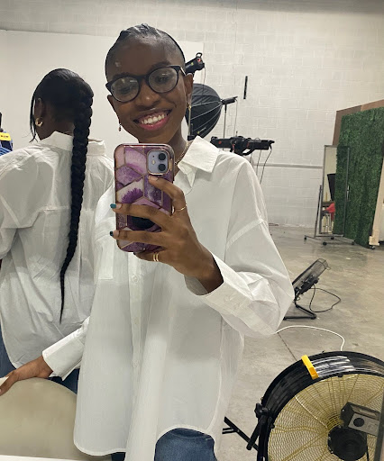

Introduction
Stephanie Ijiogbe's Secretive Impala

- Personal background: I was born in Edo State, Nigeria, and moved to the United States when I was 8. I lived in New York for about two years and moved to North Carolina in 2015.
- Professional Background: I’ve worked various jobs since high school including games booth operator for a fair, catering staff for an event planning company, babysitting, and homework grader.
- Academic background: I’m in my junior year here at UNCC. I’m majoring in Computer Science with a concentration in Software Engineering.
- Background in this subject: I took a couple of web design and application courses in high school so I’m interested in getting more in-depth lessons.
- Primary Computer Platform: MacOS
- Courses I'm Taking & Why:
- ITIS 3135: Web-Based Application Design and Development - Required
- ITIS 3130: Human-Centered Computing - This was an option from the Concentration Electives. I thought it’d be interesting to learn more about the interaction between humans and machines and how interface design plays a role in user experience
- ITSC 3146: Introduction to Operating Systems and Networking - Required
- ITSC 3155: Software Engineering - Required
- ITCS 3160: Database Design and Implementation - Required
- Funny/Interesting item about yourself: I decided to learn the violin and guitar, but I really only know how to play one or two songs on each instrument. When it comes to other songs, I have to go super slow.
- I'd also like to share: I come off as super standoffish when people first meet me, but once I get to know them, I get a lot more comfortable around them and I’m more approachable.